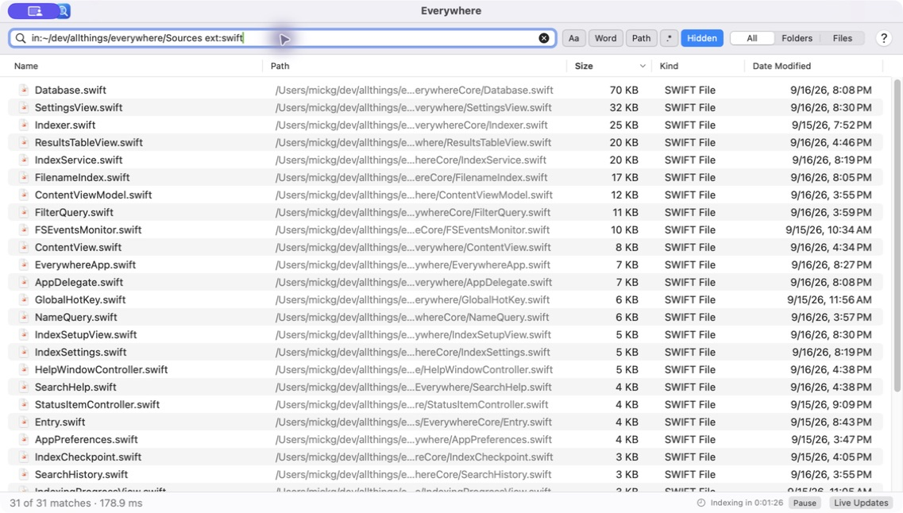
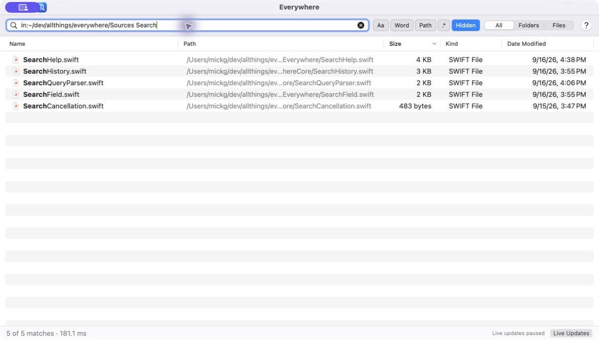

Start typing. Find it.
Search fragments anywhere in a filename. Results update as you type, with matching text highlighted and more results as you scroll.
FILE SEARCH, MADE FOR MAC
You remember the name. Everywhere finds the file.
Fast, focused search that feels at home on your Mac.
macOS 13+ · Apple silicon & Intel · Free & open source

LESS HUNTING. MORE DOING.
Search fragments anywhere in a filename. Results update as you type, with matching text highlighted and more results as you scroll.
Press ⌥ Space to bring Everywhere forward. It stays in your menu bar, ready for the next “where did I put that?”
Open files, reveal them in Finder, preview with Quick Look, or open a folder in your favorite terminal. All from the results.
FROM A FRAGMENT TO A FILTER
A few letters are often enough. When you need to be specific, combine names with file types, sizes, dates, and folders.
Explore the search syntaxreport ext:pdfThe report, in PDF form.
type:image dm:pastweekImages modified in the past week.
size:>100MBThe big files taking up space.
in:~/Documents invoiceInvoices inside Documents and its subfolders.
FAMILIAR BY DESIGN
Native controls. Keyboard shortcuts. Help that works offline.
Built with SwiftUI and AppKit to fit the way you work.

Choose your search locations and exclusions. Pause a scan, resume it, or search your saved index while updates are off.
Live filesystem updates track changes. Journal replay catches up with changes made while Everywhere was closed.
Everywhere indexes names and filesystem metadata, not document contents. A compact SQLite index powers the search.
MAKE YOURSELF AT HOME
Free to use. Open to explore.
Available for macOS Ventura and later.